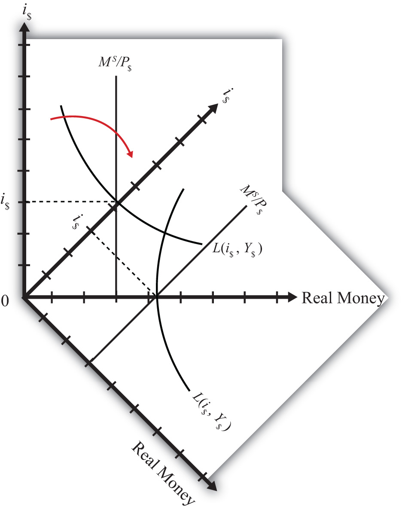
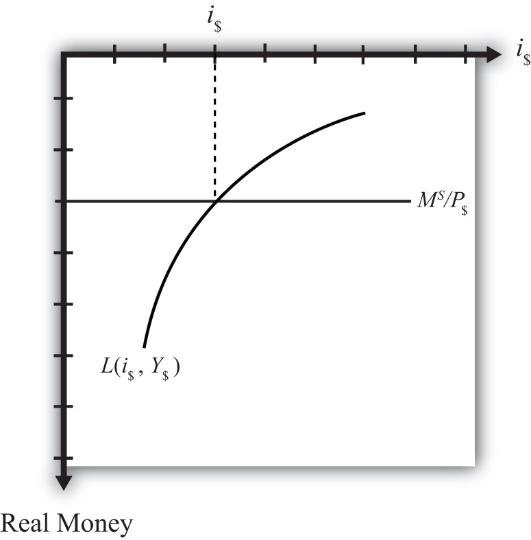

In this section, we will integrate the money market with the foreign exchange market to demonstrate the interactions that exist between the two. First, let’s review.
In the money market, the endogenous variable is the interest rate (i$). This is the variable that is determined in equilibrium in the model. The exogenous variables are the money supply (MS), the price level (P$), and the level of real gross domestic product (GDP) (Y). These variables are determined outside the money market and treated as known values. Their values determine the supply and demand for money and affect the equilibrium value of the interest rate.
In the foreign exchange (Forex) market, the endogenous variable is the exchange rate, E$/£. The exogenous variables are the domestic interest rate (i$), the foreign interest rate (i£), and the expected exchange rate (E$/£e). Their values determine the domestic and foreign rates of return and affect the equilibrium value of the exchange rate.
The linkage between the two markets arises because the domestic interest rate is the endogenous variable in the money market and an exogenous variable in the Forex market. Thus when considering the Forex, when we say the interest rate is determined outside of the Forex market, we know where it is determined: it is determined in the U.S. money market as the interest rate that satisfies real supply and demand for money.
We can keep track of the interactions between these two markets using a simple graphical technique. We begin with the money market diagram as developed in Chapter 18 "Interest Rate Determination", Section 18.7 "Money Functions and Equilibrium". The trick is to rotate the diagram ninety degrees in a clockwise direction. Figure 18.6 "Rotating the Money Market Diagram" shows the beginning of the rotation pivoted around the origin at zero.
Figure 18.6 Rotating the Money Market Diagram
When rotated the full ninety degrees, it will be positioned as shown in Figure 18.7 "Ninety-Degree Rotation of the Money Market Diagram". The most important thing to remember about this new diagram is that the value of real money supply and demand increases downward away from the origin at zero along the vertical axis. Thus when the money supply “increases,” this will be represented in the diagram as a “downward” shift in the real money supply line. The interest rate, in contrast, increases away from the origin to the right along the horizontal axis when rotated in this position.
Figure 18.7 Ninety-Degree Rotation of the Money Market Diagram
Since the interest rate is identical to the rate of return on dollar assets from a U.S. dollar holder’s perspective (i.e., RoR$ = i$), we can now place the RoR diagram directly on top of the rotated money market diagram as shown in Figure 18.8 "Money-Forex Diagram". The equilibrium interest rate (i′$), shown along the horizontal axis above the rotated money market diagram, determines the position of the RoR$ line in the Forex market above. This combined with the RoR£ curve determines the equilibrium exchange rate, E′$/£, in the Forex market. We will call this diagram the “money-Forex diagram” and the combined model the “money-Forex model.”
Figure 18.8 Money-Forex Diagram

Jeopardy Questions. As in the popular television game show, you are given an answer to a question and you must respond with the question. For example, if the answer is “a tax on imports,” then the correct question is “What is a tariff?”